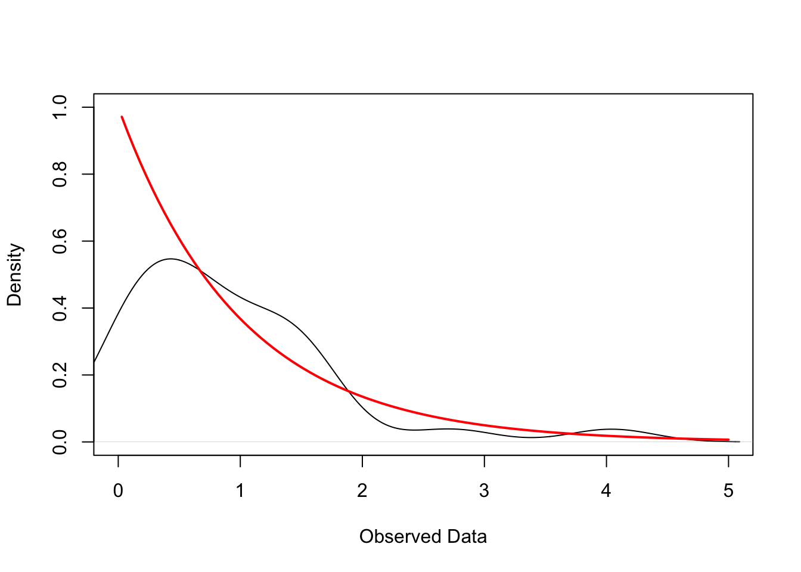

I describe point estimation under the frequentist framework and motivate the need for statistical models.
Published
October 15, 2025
Introduction
This is the second post in a three-part series on statistical inference. Previously, I introduced the general framework of frequentist statistical inference under the random sampling assumption. Here, we view the observed data \(\{\boldsymbol x_i\}_{i=1}^n\) as a realization of the random vectors \(\{\boldsymbol X_i\}_{i=1}^n\) independently drawn from an an unknown, common distribution \(F\).1 The goal of frequentist statistical inference is to use this abstraction to make conclusions about \(F\) based on the observed data and quantify the uncertainty in those statements. Specifically, the frequentist thought experiment reasons about uncertainty by asking how frequently we would see the observed data if we repeatedly sampled from the data generating process \(F\).
1 Recall that \(\boldsymbol x_i = (x_{i1}, \ldots, x_{iK})'\) and \(\boldsymbol X_i = (X_{i1}, \ldots, X_{iK})\).
We have not yet discussed the type of conclusions we make about \(F\) in statistical inference. In this post, I focus on point estimation, which is a form of statistical inference that involves constructing a “good guess” of a feature of \(F\).
Point Estimation
Notation
Before formally developing the notion of point estimation, it is useful to clarify the notation used in this post. Previously, I had introduced the random sampling framework using vector-valued quantities \(\boldsymbol X_i, \boldsymbol x_i \in \mathbb{R}^K\). To keep the exposition in this post simple, I focus on the case where \(K=1\). In this setting, the data generating process \(F\) is a univariate distribution, and our discussion of point estimation is limited to scalar-valued quantities.2
2 Nevertheless, the conceptual ideas discussed here extend to vector quantities in a fairly straightforward manner.
3 I don’t think this is standard terminology, but it helps with my intuition.
Under this set up, a random sample of size \(n\) from \(F\) consists of the random variables \(X_1, \ldots, X_n\). Their corresponding realizations are the scalars \(x_1, \ldots, x_n\). Additionally, when discussing statistical inference in the random sampling framework, it is useful to distinguish between population-level and sample-level random variables.3 The population-level random variable, denoted \(X\), is a generic random variable with distribution \(F\) that is used as a reference variable when defining features of the DGP. The sample-level random variables, denoted \(X_i\), represent the specific draws that make up our random sample. With this notation established, we are now ready to formally discuss point estimation.
Estimand, Estimator, and Estimate
The feature of the DGP \(F\) that we want to learn about is called an estimand\(\theta\) and is defined as a function of \(F\): \[
\theta = \theta(F).
\]
Common examples of an estimand include the the population mean \[
\mu = \mathbb{E}[X],
\] and population variance \[
\sigma^2 = \mathbb{E}[(X - \mathbb{E}[X])^2] = \mathbb{E}[X^2] - (\mathbb{E}[X])^2.
\] Since the DGP is unknown, the best we can do is use the random sample to guess the value of the estimand. An estimator\(\hat \theta\) is a function of the sample that is intended to provide a guess of the estimand:
\[
\hat{\theta} = \hat{\theta}(X_1, \ldots, X_n).
\] When the estimator is evaluated at a specific realization of the sample, we obtain an estimate\[
\hat\theta = \hat\theta(x_1, \ldots, x_n)
\] of the estimand. Notice that the notation \(\hat\theta\) is used to denote both the estimator and the estimate — the context should make it clear which one is being referred to.
It’s worth emphasizing that the estimand is a fixed but unknown scalar because it is a function of the fixed but unknown DGP \(F\), the estimator is a random variable because it is a function of the random sample, and the estimate is a fixed and known scalar because it is a function of the observed data.
Plug-In Principle
Perhaps it is already obvious, but let’s consider a simulated example to see why point estimation is difficult. Suppose we have a random sample of size 30 from a DGP that is the single-variable exponential distribution with rate parameter \(\alpha= 1\): \[
X_{i} \sim \text{Exp}(1) \, \, \text{ for } i = 1, \ldots, 30 \quad \text{and} \quad X_i \perp X_j \, \, \text{ for } i \neq j.
\]
The figure below plots the empirical kernel density of the realizations of this random sample (black line) and the true density of the exponential distribution (red line). In practice, we do not know the true DGP and need to guess its characteristics using the observed data. However, uncertainty induced by the sampling process makes this a non-trivial task — as illustrated by the discrepancy between the empirical and true densities in the figure below.
Code
# Simulate IID sample of 30 obs from exp(1)set.seed(123)n <-30x <-rexp(n, rate =1)# Empirical Density dens <-density(x)# True Exponential Densityxs <-seq(0, max(x), length.out =200)ys <-dexp(xs, rate =1)# Plotplot(dens, main ="", xlab ="Observed Data", ylab ="Density", xlim =c(0, 5), ylim =c(0, max(c(dens$y, ys))))curve(dexp(x, rate =1), from =min(x), add =TRUE, col ="red", lwd =2)

Statisticians have addressed the challenge of point estimation by developing several estimation principles that provide systematic ways (i.e. rules) to construct estimators. One common method is the plug-in principle (or analog principle). The idea is to construct the estimator by replacing the population quantities in the estimand with their sample analogs.4 Thus, the plug-in estimator for the population mean is the sample mean
4 To quote my Mathematical Statistics Professor, “Do to the sample to get your estimator, as you would do to your population to get your estimand.”
\[
\bar{X} = \frac{1}{n} \sum_{i=1}^n X_i.
\] Similarly, the plug-in estimator of the population variance \(\sigma^2\) is the sample variance \[
\hat \sigma^2 = \frac{1}{n} \sum_{i=1}^n X_i^2 - \left(\frac{1}{n}\sum X_i\right)^2 =\frac{1}{n} \sum_{i=1}^n \left(X_i - \bar{X}\right)^2.
\]
Estimator Properties
How do we know if an estimator is any good? Frequentists evaluate estimators based on their theoretical properties in (hypothetical) repeated samples. A full treatment of estimator properties is typically the focus of a mathematical statistics course, but it is still valuable to briefly highlight some fundamental properties here.
The error of an estimator is defined as the difference between the estimate and the estimand: \[
e(x_1, \ldots, x_n) = \hat\theta(x_1, \ldots, x_n) - \theta.
\] The bias of an estimator is the average error of the estimator across repeated samples of size \(n\) from the DGP5: \[
B(\hat\theta) = \mathbb{E}[\hat{\theta}(X_1, \ldots,X_n)] - \theta.
\] Intuitively, the bias captures the systematic error of the estimator: if the bias is positive, the estimator tends to overestimate the estimand, and if the bias is negative, the estimator tends to underestimate the estimand. We say an estimator \(\hat{\theta}\) is unbiased for \(\theta\) if its bias is zero:
5 An alternate, but equivalent, formulation is that the bias is the average error across all possible samples of size \(n\).
\[
\mathbb{E}[\hat{\theta}] - \theta = 0.
\] Thus, the errors of an unbiased estimator are purely due to the uncertainty induced by sampling a finite number of draws from \(F\). As it turns out, the sample mean is an unbiased estimator of the population mean under the random sampling assumption: \[
\mathbb{E}[\bar X] = \frac{1}{n} \sum_{i=1}^n \mathbb{E}[X_i] = \frac{1}{n} \sum_{i=1}^n \mu = \mu.
\tag{1}\] The first equality follows from the linearity of expectations, the second equality follows from the random sampling assumption, and the third equality is a simplification.
While bias quantifies how far the estimator’s average is from the estimand, the variance (or sampling variance) measures how much the estimator varies across repeated samples of size \(n\):
\[
Var(\hat\theta) = \mathbb{E}_F[(\hat\theta - \mathbb{E}_F[\hat\theta])^2].
\] The variance of the sample mean under the random sampling assumption is given by
\[
\operatorname {Var} \left[\hat\mu\right] = \frac{1}{n^2}\operatorname{Var} \left[ \sum_{i=1}^n \boldsymbol X_i\right] = \frac{1}{n^2} \sum_{i=1}^n \operatorname{Var}[\boldsymbol X_i] = \frac{1}{n^2} \sum_{i=1}^n \sigma^2 = \frac{\sigma^2}{n},
\tag{2}\] where \(\sigma^2\) is the population variance \(\operatorname{Var}[X]\). The first equality uses the properties of variance. The second equality follows from the fact that the independence of each \(\boldsymbol X_i\) means they are uncorrelated, and so the variance of their sum equals the sum of their variance. The third equality uses the fact that each \(\boldsymbol X_i\) are drawn from an identical distribution and so have the same variance \(\sigma^2\). The fourth equality is an algebraic simplification.
Let’s confirm Equation 1 and Equation 2 in the motivating example introduced previously. The population mean and variance of an exponential distribution with \(\alpha = 1\) both equal \(1\). Thus, we expect the sample mean to have a mean of \(1\) and a variance of \(1/30 \approx 0.0333\). The code below simulates drawing a random sample of size \(n=30\) from \(Exp(1)\)\(10,000\) times and computes the average and variance of the sample means in each sample:
set.seed(123)# Simulation parametersn <-30# sample sizen_sims <-10000# number of repeated draws # Store sample means for the 10000 repeated samplessample_means <-replicate( n_sims,mean(rexp(n, rate =1)))# Average and variance of sample meansc(mean(sample_means), var(sample_means))
[1] 0.99712085 0.03284092
The Necessity for Statistical Models
The sampling distribution of an estimator is the probability distribution that describes how the estimator’s estimates vary across all possible samples of size \(n\) drawn from the DGP. Intuitively, it characterizes the behavior of the estimator under repeated sampling. Under the random sampling assumption, the sampling distribution is completely determined by the DGP \(F\), the sample size \(n\), and the functional form of the estimator \(\hat\theta\).
Let’s revisit the example of the sample mean estimator \(\hat\mu\) for the population mean \(\mu\). We have already established some features of the sampling distribution of \(\hat\mu\) despite knowing nothing about \(F\). Particularly, the mean of \(\hat\mu\) is \(\mu\) and its variance is \(\sigma^2/n\). However, to say more about the distribution of \(\hat\mu\) — like its shape — we need to make assumptions about the DGP.
A statistical model is a set of assumptions about the general structure of the data generating process \(F\). Put differently, we can think of a statistical model as a family of possible distributions that \(F\) could belong to. To illustrate the added value of statistical models, suppose our sample \(\boldsymbol X_1, \ldots, \boldsymbol X_n\) is drawn iid from \(\mathcal{N}(\mu, \sigma^2)\). Since
is a linear combination of normally distributed random variables, it is also normally distributed. Moreover, we have previously established that \(\mathbb{E}_F[\hat\mu] = \mu\) and \(\operatorname{Var}[\hat\mu] = \sigma^2/n\) for any DGP \(F\). Thus, assumption of a normal DGP allows us to completely characterize the sampling distribution of \(\hat\mu\) as \(\mathcal{N}(\mu, \sigma^2/n)\). This is powerful because we can use this sampling distribution to quantify the uncertainty in our estimates by constructing confidence intervals and conducting hypothesis tests.
Conclusion
flowchart LR
classDef box fill:#f8f9fa,stroke:#444,stroke-width:1px,rx:10,ry:10;
DGP["Data Generating Process"]:::box
Data["Observed Data"]:::box
Model["Statistical Model"]:::box
%% Main flows
DGP -- "Random Sampling" --> Data
DGP -. "Assumptions" .-> Model
Model -- "Probability" --> Data
Data -- "Inference" --> Model
Model -. "Approximate Reality" .-> DGP
It is important to note that statistical inference is valid only if the assumptions of statistical model hold.
References
Hansen, Bruce E. 2022. Probability and Statistics for Economists. Princeton University Press.